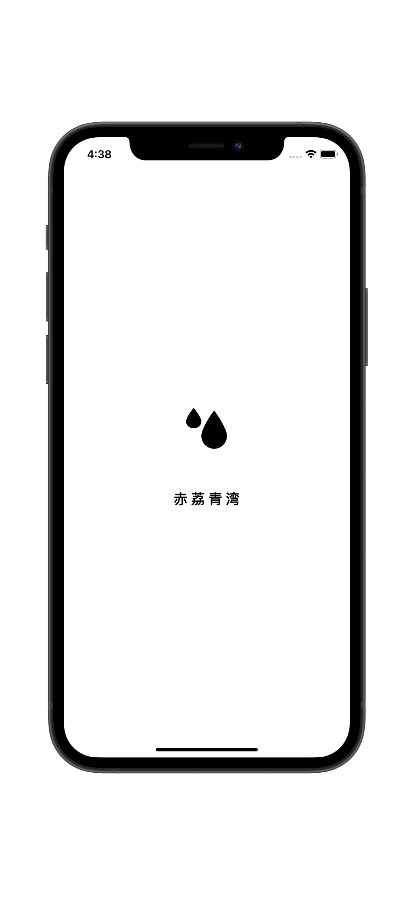
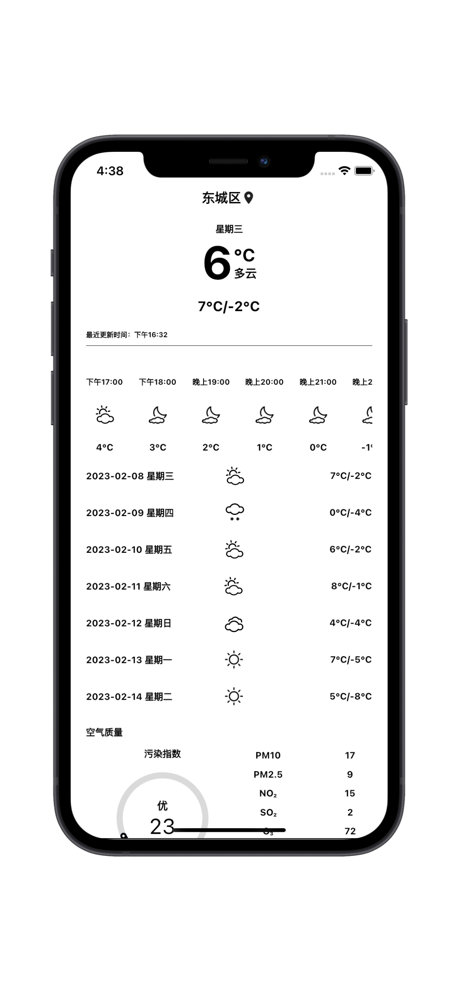
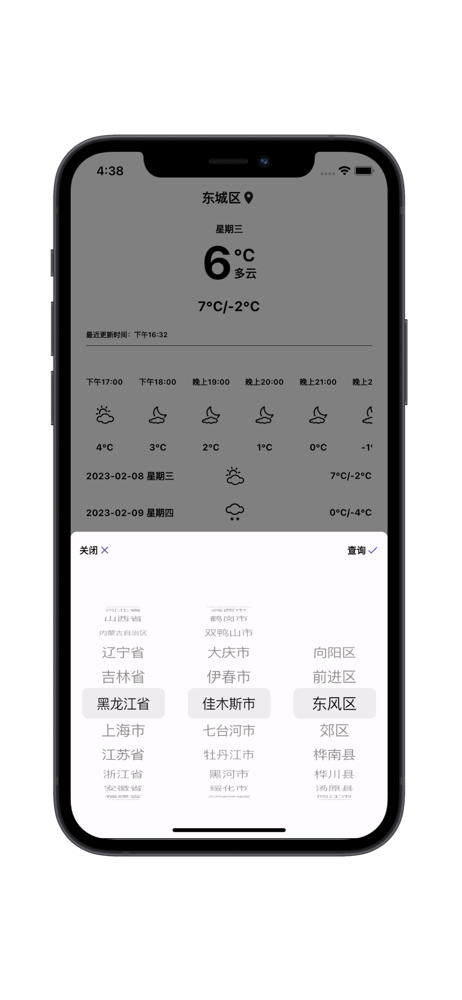

赤荔青湾-实时天气查询工具
欢迎使用赤荔青湾
“赤荔青湾-实时天气查询工具”让您及时了解今天、明天、未来一周、10天和15天天气预报情况，为您的出游计划提前做好准备。准确查询24小时、今天、明天、未来一周7天、10天、15天、30天及40天天气预报查询服务，并为用户提供生活指数、交通指数、旅行出游指数及各类专业天气预报资讯。
天气预报15天查询,未来15天天气预报,天气预报30天查询,未来十五天天气查询,空气质量,生活指数,旅游出行,交通天气等查询服务
  - 联系电话：+86 15592678154----|----邮箱：chilii@163.com -